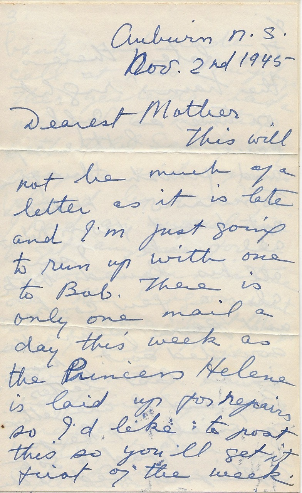

Auburn N . S .
Nov . 2 nd 1945
Dearest Mother
This will not be much of a letter as it is late and I’m just going to run up with one to Bob. There is only one mail a day this week as the Princess Helene is laid up for repairs so I’d like to post this so you’ll get it the first of the week. Too late, there’s the train! right on time, so I’ll have a little nap and finish this for tomorrow. Have not heard from Robert all week. I sent all his laundry back also a few cookies and pears. He sounded sort of hungry in his last letter. Bay and I are getting on nicely. I keep busy. Had to go to Aylesford Wed. to the bank and made a call at Mrs Murphys Then yesterday had a nice W.A. meeting with All Saints day prayers and hymns played by me. I had an awful time to get anyone for a service Armistice day. The leigon wanted to come to St Marys and I tried Major Fowler. Fry. Lewis and finally got Rudderham to say he’d try to come for one service the afternoon. Mrs Luke Hiltz said after the meeting that this parish had the worst bunch of men and wardens in Nova Scotia. How she riddled them for not doing their work. I think she would like her son Burgess to be put in. He has been doing all Clad Kellys work about the wood. etc Bay and I went out Hallow’en, she was dressed as “a “ole tramp” and I as an old witch. I bent over and certainly looked and felt the part, as I’d walked back from Aylesford in the afternoon . but I had a rest before we went out. The only damage the pranksters did here was to turn the lights off . the switch is on the porch you know. They did not even soap our windows. Bay had a lovely time at the Brownie party Tues. night. I went to see a war bride Mrs Mapleback who has moved into the Ward Farm a mile from here. She is simply lovely I think. A cultured English woman. What a shock she must have had to arrive on Mid night train and go to his peoples home on the North Mountain Her husband seems nice. He only got back a couple of weeks ago, but she has been out since April. Her Mother in law went away and she had to do very hard work all summer and found it very warm. She taught a “Vicers children” in England. She is very thin and reminds me a little of Bessie Cameron but more of Norah Grey I think. She has brown eyes and brown hair with a white streak right through the middle of her hair. She had every thing simply spot less They have a nice house bath room and nice modern kitchen Our guild plans to have a tea in her honour at Mrs Yorke Murphys next week, and a shower of small articles. She is on this telephone line, and I am glad to have such a nice neighbour as she appears to be. The new house next to Mrs Morses is progressing rapidly. That Mrs Semone is very friendly and she told me today her home was in Toronto before she was married she is not very much taken with Auburn. Heaps of love to all as ever Ruth
P.S.
There are two young couples building in Aylesford next to Mrs Y. Murphys
P.S.
Nov.5
I missed the mail after all Sat. Now B. is just going to school and will post this. We went to Berwick Sat. and had a nice afternoon I made 3 calls then we went to the 1st show and came home on the 9.30 bus. Heaps of love from us both. Thanks for letter